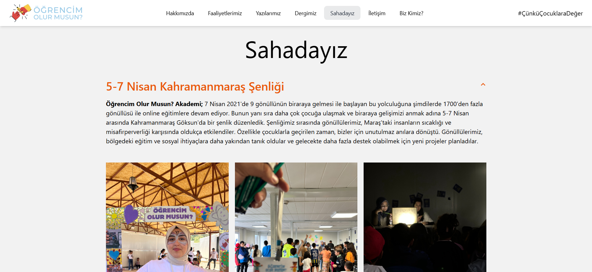

Öğrencim Olur Musun? Akademi
Link: https://www.ogrencimolurmusun.com/
A web application designed to support primary and middle school students affected by educational inequality by providing academic and mentorship assistance. The platform features a user-friendly interface developed with React. On the backend, Supabase and Prisma are used for data management.

Path Blocker Game
Technologies: Java, BFS (Breadth-First Search), Image Processing
A puzzle game developed in Java with AI support. The goal is to find the most optimal path on the map, starting from a given point. In this project, I used Java, Artificial Intelligence, and Search Algorithms (BFS). I developed an effective solution that allows the AI to select the best steps using different search algorithms.
Expense Tracker
Technologies: C++, FLTK
This application, developed using C++ and the FLTK library, enables users to categorize their expenses and manage their budgets effectively. It allows users to plan their future payments and manage their transactions accordingly.